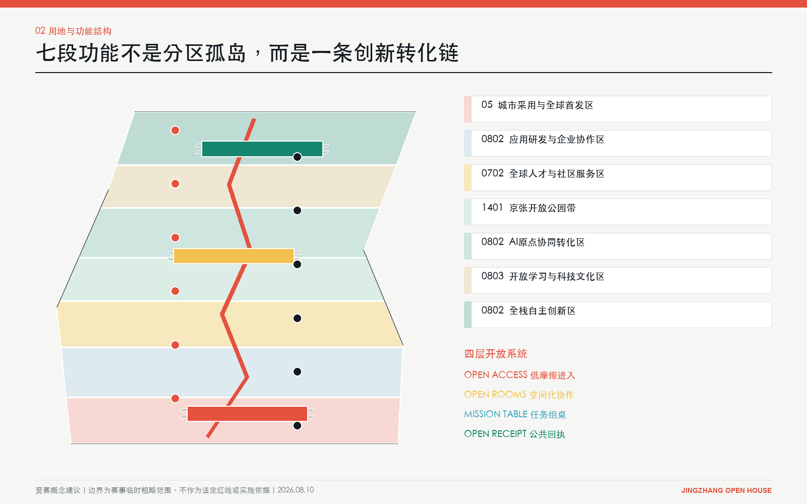
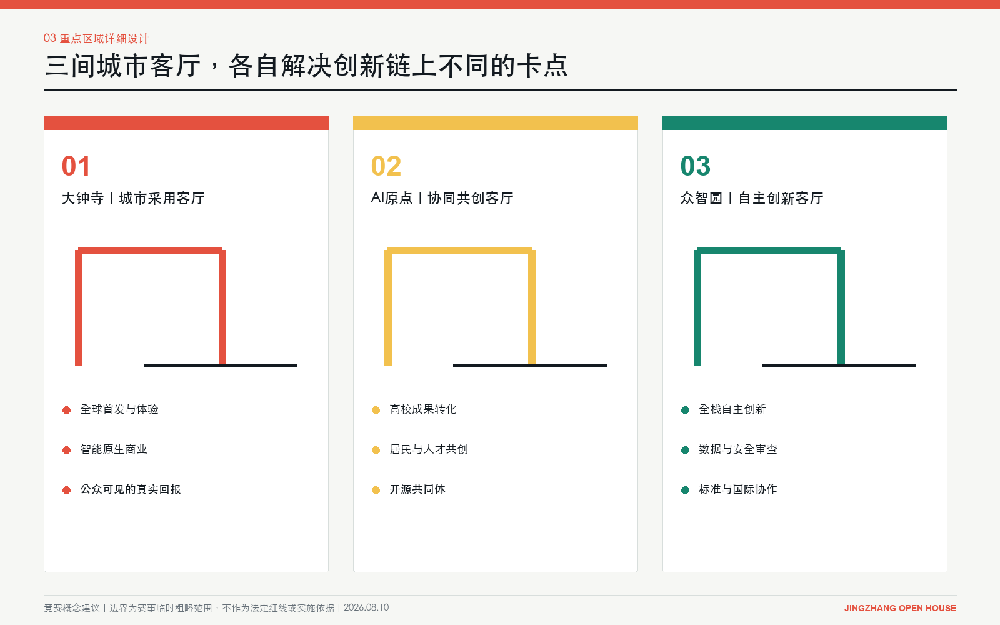
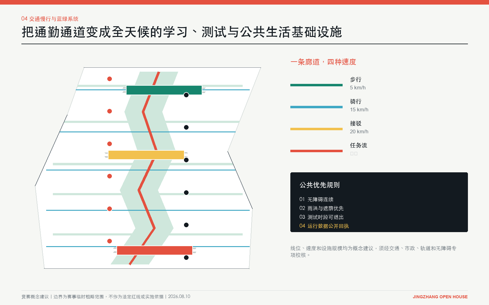

Centennial Jing-Zhang AI Innovation Belt
京张开放之家
把全球 AI 人才的一次到访，变成一次共同建设。
采用赛事临时粗略边界。本成果为竞赛概念建议，不是法定规划。

开放流程
- 01到访
- 02组桌
- 03共测
- 04回执
- 05采用 / 退出

11.41 km²临时工作范围
9.35 km概念开放廊道
22.26%概念绿地比例
5.56%城市客厅公共空间
三间城市客厅


12 个开放端口
每个端口都有使用者、人工责任人、成功回执和停止条件。
- 01到达交换台
- 02AI城市展厅
- 03智能原生商业街
- 04居民共创桌
- 05家庭学习院
- 06AI原点会客厅
- 07开源铸造所
- 08跨境IP诊所
- 09标准与安全实验室
- 10算力数据撮合台
- 11林下移动实验场
- 12全球发布厅

评审覆盖索引
- 01总览地图
- 02三层范围
- 03重点区域
- 04用地分区
- 05交通慢行
- 06蓝绿公共空间
- 07建筑
- 08更新项目
- 09AI 场景
- 10核心指标
- 11任务覆盖
- 12自检状态
- 13来源
- 14假设
五道门槛
- 临时资料不冒充官方
- 居民与弱势群体拥有真实席位
- 公共服务保留非数字替代
- 每项测试有人工责任人与停止规则
- 失败同样进入证据记录
证据契约
GeoJSON 与 metrics 是权威数据层，图件和本页是解释层。FAR、高度、拆改和投资均待官方资料与专业团队确认。
geometry/*.geojson · metrics.json · assumptions.json · compliance_matrix.json · standard_matrix.json · design_depth_matrix.json